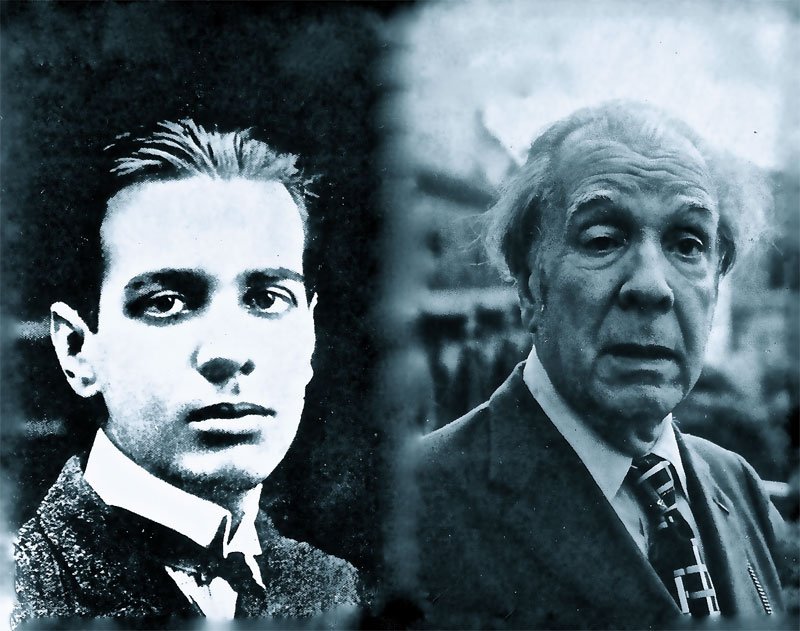
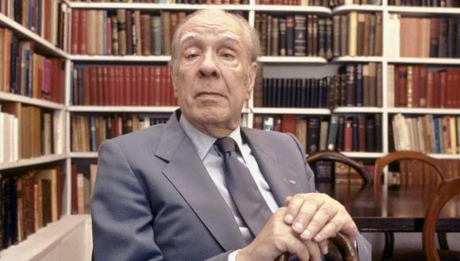

A) ¿Por qué creen que elige una biografía como género?
B) ¿A qué se refiere el narrador del cuento cuando afirma “La aventura consta en un libro insigne”?
C) ¿Cuáles son las razones por las que el narrador solo relata en detalle una noche en la vida de Cruz?
D) ¿Por qué podemos afirmar que es un cuento sobre la identidad? ¿Cómo se relaciona con el epígrafe del cuento?
E) Expliquen que interpretaciones pueden hacer sobre el titulo del cuento.
Borges se caracterizaba por no tener un genero particular en el que escribía sino
que se expresaba en diversas formas como poemas, cuentos, ensayos entre otros; solía implementar ideas innovadoras
que trataba de incorporar a la obra dándole más significado de alguna manera, un ejemplo de esto es la “Biografía
de Tadeo Isidoro Cruz (1829-1874)”.
Borges trataba esta obra como una biografía real aun cuando esta era de un personaje ficticio, intentaba darle
profundidad a la historia de Cruz proporcionándole una identidad exterior a la obra de Hernández que dejo su origen
incompleto. Al hacer uso de la estructura de una biografía pudo presentar el ambiente y situación en la que nació
Cruz, brindando la historia familiar de la que luego haría uso.
En esta “biografía” Cruz es el protagonista
pero es un coprotagonista en la obra de la que viene, Borges intertextualiza su obra con la de Hernández que contiene
el hilo de historia principal. “La aventura consta en un libro insigne” citando a Borges la “aventura” de la que Cruz
proviene es de un libro muy destacado y cuenta con muchas versiones que se repiten y repiten. Por esto es que Borges
no ve necesario repetirla y prefiere enfocarse en la noche a la que quiere darle una explicación, llenando de paso
los huecos que dejo Hernández, porque sin ella no entiende que Cruz deje de lado su puesto para unirse a Fierro.
Es así que Borges escribe lo no escrito por Hernández ampliando el origen que el otro dejo incompleto…La
autorrealización de Cruz.
Cuando a Cruz lo asignan a la zona en la que Fierro se encuentra, este se da cuenta
que es la misma zona en la que su padre murió pero hace caso omiso hasta que se topa con Fierro y es ahí que Cruz se da
cuenta. La situación por la que anteriormente paso su padre y el mismo volvía a ocurrir esta vez con Fierro. En Fierro
ve a su padre y a sí mismo, se identifica con el espíritu que muestra, por ello se decide a ayudarlo.
Algo a lo que no le pusimos demasiada atención es el epígrafe que Borges coloco, que analizándolo ahora podemos llegar
a deducir se refiere a la identidad de gaucho que Cruz perdió y siguió anhelando aun después de encarcelado y
convertido en policía. Todo esto antes de que el mundo de “El gaucho Martin Fierro” comenzara, la chispa de su lado
gauchesco se prendió luego de conocer a Fierro.
La identidad de Cruz es abordada por Borges como si este no
fuera un personaje ficticio sino una persona, como si esta biografía no fuera de Cruz sino de Tadeo Isidoro Cruz.
 